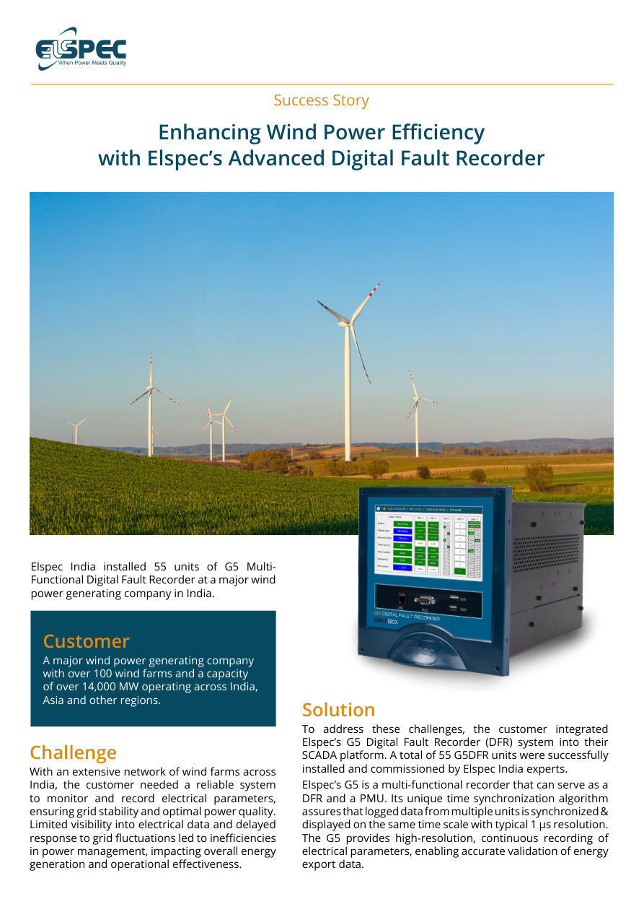
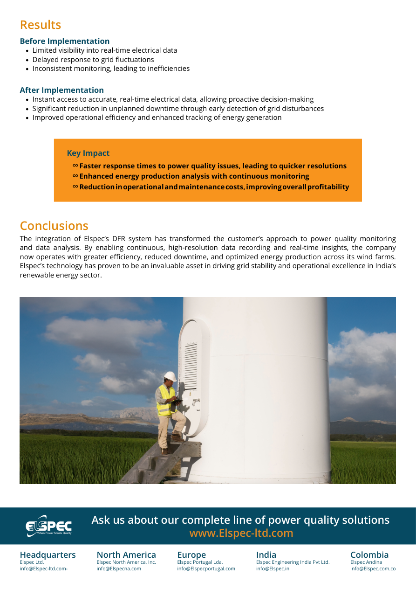

Elspec India Success Story
Enhancing Wind Power Efficiency with Elspec's Advanced Digital Fault Recorder
How Elspec India's G5 Digital Fault Recorder improved visibility, response times and operational efficiency across a major wind power network.
The Challenge
Real-time visibility across a large wind portfolio
A major wind power generating company operating more than 100 wind farms and over 14,000 MW of capacity needed reliable electrical data to support grid stability, power quality and energy-generation analysis.
Limited visibility and delayed response to grid fluctuations created inefficiencies in power management and operational performance.
The Solution
55 G5 DFR units
Installed and commissioned by Elspec India experts.
1 μsTypical time-synchronization resolution for high-resolution recordings.
Success Story Report
Wind power monitoring and operational improvement
Review the complete success story, including the customer challenge, G5 DFR solution, results and key impact.

